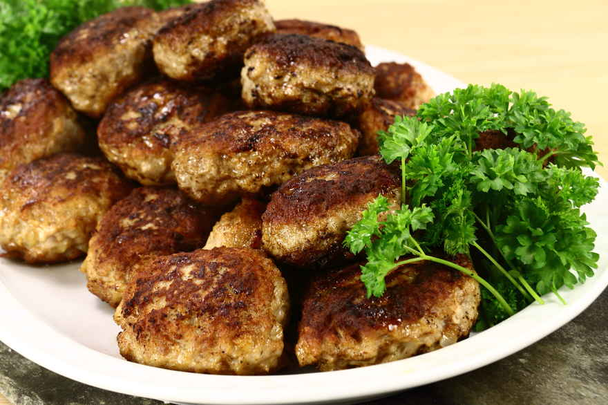

Frikadeller

Opskriften for den klassiske danske frikadelle
Dette er opskriften på den klassiske danske frikadelle. En succes i dansk gastronomi og en favorit i alle generationer i familien.
Ingredienser
- 500 g hakket kalv og flæsk
- 1 revet eller finthakket løg
- 1 æg
- 1 dl hvedemel eller havregryn
- ca. 2 dl væske: bouillon eller mælk
- salt og peber
- smør til stegning
fremgangsmåde
- Ingredienserne blandes med håndmixer, røres sammen i hånden eller på røremaskine til en jævn fars.
- farsen hviler i køleskab i ca. 30 minutter.
hvis farsen er for fast , kan der tilsættes mere væske.
- En stegepande varmes op til god middelvarme, smøret smeltes og bruser af.
- frikadeller formes med en spiseske (kan med fordel dyppes i vand så de ikke hænger i skeen).
- frikadellerne sættes på den varme pande ved middelvarme og steges på alle sider til de er gyldenbrune.
Frikadellerne kan serveres med kogte kartofler og brun sovs
Velbekomme!